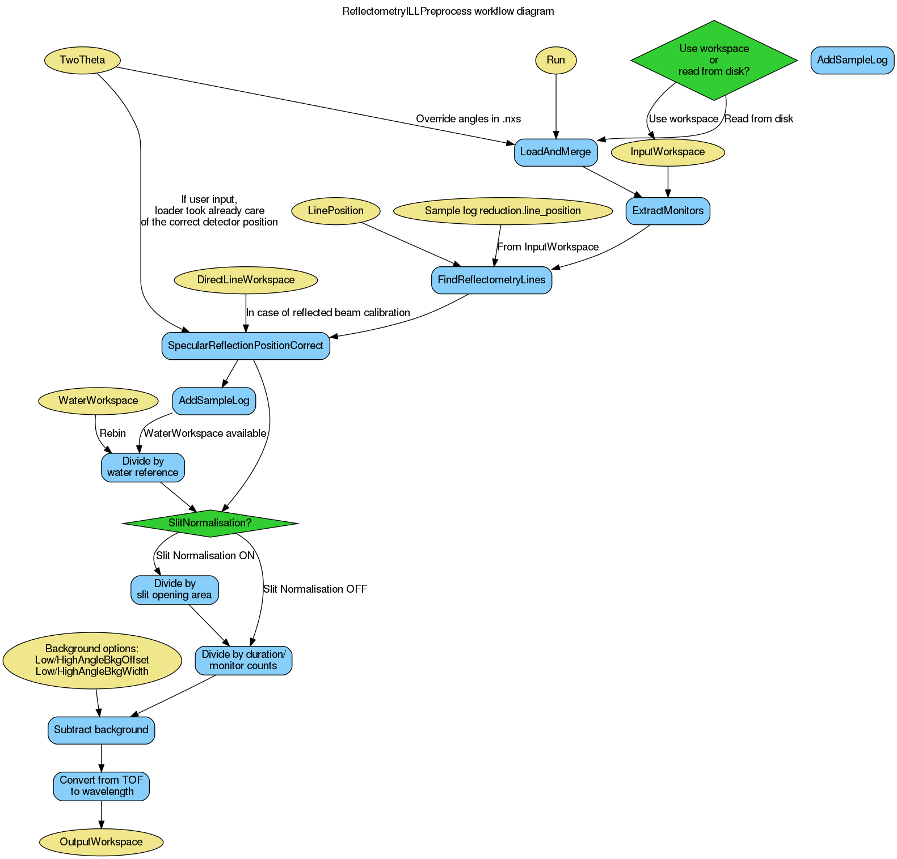

ReflectometryILLPreprocess dialog.
Table of Contents
| Name | Direction | Type | Default | Description |
|---|---|---|---|---|
| Run | Input | list of str lists | A list of input run numbers/files. Allowed values: [‘nxs’] | |
| InputWorkspace | Input | MatrixWorkspace | An input workspace (units TOF) if no Run is specified. | |
| OutputWorkspace | Output | MatrixWorkspace | Mandatory | The preprocessed output workspace (unit wavelength), single histogram. |
| TwoTheta | Input | number | -1 | A user-defined scattering angle 2 theta (unit degrees). |
| LinePosition | Input | number | -1 | A fractional workspace index corresponding to the beam centre between 0 and 255. |
| DirectLineWorkspace | Input | MatrixWorkspace | A pre-processed direct beam workspace. | |
| SubalgorithmLogging | Input | string | Logging OFF | Enable or disable child algorithm logging. Allowed values: [‘Logging OFF’, ‘Logging ON’] |
| Cleanup | Input | string | Cleanup ON | Enable or disable intermediate workspace cleanup. Allowed values: [‘Cleanup ON’, ‘Cleanup OFF’] |
| WaterWorkspace | Input | MatrixWorkspace | A (water) calibration workspace (unit TOF). | |
| SlitNormalisation | Input | string | Slit Normalisation AUTO | Enable or disable slit normalisation. Allowed values: [‘Slit Normalisation AUTO’, ‘Slit Normalisation OFF’, ‘Slit Normalisation ON’] |
| FluxNormalisation | Input | string | Normalise To Time | Neutron flux normalisation method. Allowed values: [‘Normalise To Time’, ‘Normalise To Monitor’, ‘Normalisation OFF’] |
| ForegroundHalfWidth | Input | long list | Number of foreground pixels at lower and higher angles from the centre pixel. | |
| FlatBackground | Input | string | Background Constant Fit | Flat background calculation method for background subtraction. Allowed values: [‘Background Constant Fit’, ‘Background Linear Fit’, ‘Background OFF’] |
| LowAngleBkgOffset | Input | number | 7 | Distance of flat background region towards smaller detector angles from the foreground centre, in pixels. |
| LowAngleBkgWidth | Input | number | 5 | Width of flat background region towards smaller detector angles from the foreground centre, in pixels. |
| HighAngleBkgOffset | Input | number | 7 | Distance of flat background region towards larger detector angles from the foreground centre, in pixels. |
| HighAngleBkgWidth | Input | number | 5 | Width of flat background region towards larger detector angles from the foreground centre, in pixels. |
| FitStartWorkspaceIndex | Input | number | 0 | Start workspace index used for peak fitting. |
| FitEndWorkspaceIndex | Input | number | 255 | Last workspace index used for peak fitting. |
| FitRangeLower | Input | number | -1 | Minimum x value (unit Angstrom) used for peak fitting. |
| FitRangeUpper | Input | number | -1 | Maximum x value (unit Angstrom) used for peak fitting. |
This algorithm is the first step in the ILL reflectometry reduction workflow. It:
The algorithm can be thought as an ‘advanced loader’, and should be used to load both direct beam and reflected beam measurements.
The OutputWorkspace can be further fed to ReflectometryILLSumForeground.
The algorithm adds the following sample log entries to the OutputWorkspace:
 angles (detector positions)
angles (detector positions)The option Slit Normalisation AUTO will select the slit normalisation depending on the instrument: for D17 and FIGARO, the slit normalisation will be turned on and off, respectively.
The workflow diagram below gives an overview of the algorithm:
A fitting of the present peak position takes place in order to determine the detector angles. For preventing fitting of the present peak position, the property LinePosition allows to provide a peak position. A use case is to enter a direct peak position, which can be obtained from the direct beam workspaces sample logs, when the Run is a reflected beam.
Alternatively, the properties TwoTheta and the sample log reduction.line_position affect the pixel angle.
Foreground is a set of pixels intensities of which will be summed in ReflectometryILLSumForeground. However, foreground needs to be defined already in this algorithm as the information is needed for the background pixels. The foreground pixel information is stored in the sample logs of OutputWorkspace under the entries starting with foreground..
Background, on the other hand, is a set of pixels which are be used for fitting a constant or linear background by CalculatePolynomialBackground.
The foreground pixels are defined by the foreground centre and ForegroundHalfWidth property. In normal use cases, the foreground center (workspace index) is taken from the fitting in LoadILLReflectometry. This can be overridden by giving the pixel as BeamCentre. Fractional values are rounded to nearest integer. The full process of deciding the foreground centre is as follows:
ForegroundHalfWidth is a list of one or two values. If a single value is given, then this number of pixels on both sides of the centre pixel are included in the foreground. For example, ForegroundHalfWidth=[3] means three pixel on both sides are included, making the foreground seven pixels wide in total. ForegroundHalfWidth=[0] means that only the centre pixel is included. When two values are given, then the foreground is asymmetric around the centre. For instance, ForegroundHalfWidth[2,5] indicates that two pixel at lower  and five pixels at higher are included in the foreground.
and five pixels at higher are included in the foreground.
LowAngleBkgWidth and HighAngleBkgWidth define the number of the background fitting pixels at low and high . Either one or both widths can be defined. The distance between the background pixels and the foreground can in turn be given by LowAngleBkgOffset and HighAngleBkgOffset.
The following figure exemplifies the foreground and background for the D17 instrument at ILL. Note, that in this particular case, the pixel indices increase with decreasing .
(Source code, png, hires.png, pdf)

The InputWorkspace and DirectBeamWorkspace can be used instead of Run if the data is already loaded into Mantid for example using LoadILLReflectometry. This option exists mainly for testing purposes.
Example - Load direct and reflected beams
from directtools import SampleLogs
# Use same foreground and background settings for direct and reflected
# beams.
# Python dictionaries can be passed to algorithms as 'keyword arguments'.
settings = {
'ForegroundHalfWidth':[5],
'LowAngleBkgOffset': 10,
'LowAngleBkgWidth': 20,
'HighAngleBkgOffset': 10,
'HighAngleBkgWidth': 50
}
direct = ReflectometryILLPreprocess(
Run='ILL/D17/317369.nxs',
**settings
)
reflected = ReflectometryILLPreprocess(
Run='ILL/D17/317370.nxs',
DirectLineWorkspace=direct,
**settings
)
# Check foreground settings from sample logs
logs = SampleLogs(reflected)
print('Reflected line position: {}'.format(logs.reduction.foreground.centre_workspace_index))
# Half widths + centre pixel
width = logs.reduction.foreground.last_workspace_index - logs.reduction.foreground.first_workspace_index + 1
print('Foreground width: {}'.format(width))
Output:
Reflected line position: 202
Foreground width: 11
Categories: AlgorithmIndex | ILL\Reflectometry | Workflow\Reflectometry
Python: ReflectometryILLPreprocess.py (last modified: 2020-01-23)
{kind=link}
{kind=link}
{kind=link}